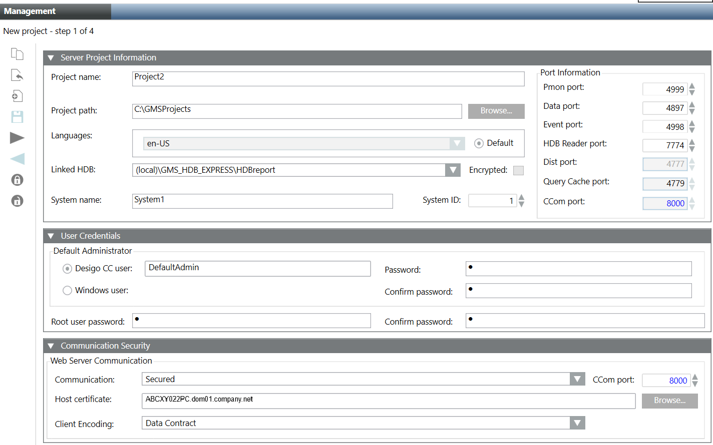

Create a New Project with Extensions on a Server
- You have installed the necessary extensions on the Server station.
- For linking an History Database, during project creation, an history database is created and available in the Linked HDB drop-down list.
- For configuring a specific user, you must have configured it under System in the SMC tree.
- To secure the Web Server communication, the certificate must be available in the appropriate Windows Certificate store.
- Launch the SMC.
- In the SMC tree, select Projects.
- The Management tab displays.
- Click Create Project
 .
. - In the Select Project Extensions dialog box, do one of the following:
- Select the desired extension suite that, by default, selects all the extensions listed under it.
- Expand the desired extension suite and select the extensions for which you want to create a project.
Note that mandatory extension and the extension on which the mandatory extension depends, both are not available for selection in the Select Project Extensions dialog box. A newly created project always includes mandatory extension and its parent extension (mandatory/non-mandatory) in the project. - Click OK.
- In the Server Project Information expander, provide the details as follows:
- In the Project name field, type the name of the new project. The project name cannot start with a hyphen (-).
- (Optional) Click Browse to change the default Project path
[installation drive:]\[installation folder] and select the target directory where you are creating the project. - (Optional) Configure languages for a project. The default project language is en-US. See Tips for Configuring and Editing Project Languages in Server Project Information Expander.
NOTE: For working in a distributed environment, the number and the sequence of the configured languages for the projects in distribution must be the same. - (Optional) Select a language from the configured project languages as the default language by selecting the Default option for producing language-dependent contents by server components. For example, Journaling is not dependent on the logged-on user and hence for printing date/time information, the project language set as default language is used for printing date/time information.
- (Optional) In the Linked HDB drop-down list, select the History database which you want to link. If there is only one HDB available, it is automatically selected. You can link the HDB after creating the project.
- (Optional) Select the Encrypted check box to encrypt the communication between a project and the HDB.
- (Optional) Type the system name and system ID to change the default value of 1. Valid values are 1 through 2048. These fields provide project identification to the system.
NOTE: For working in a distributed environment, the system name and system ID of the project must be unique. - (Optional) Type the port numbers for the Pmon, Data, Event, HDB Reader ports fields to change the default values. Ensure that no two port numbers are same.
- In the User Credentials expander, configure the details for Default Administrator and Root user as follows:
a. Set the Default Administrator as Desigo CC user or as Windows user. The Default Administrator account is used to log on to Installed Client on Server, Client/FEP.
Default administrator as Desigo CC user: Enter the password and confirm it. Ensure that the password meets the complexity requirements, if you have selected the Password must meet complexity requirements check box in the Security expander (See Security expander in SMC System Settings.).
Default administrator as Windows user: Click Browse and using the Select User dialog box select the Default administrator user either from the from local computer (from the Current Station tab) or from accessible networks (from the Other Domains tab).
b. Type the Root user password and click Confirm. Ensure that the password meets the complexity requirements, if you have selected the Password must meet complexity requirements check box in the Security expander (See Security expander in SMC System Settings.). This user is used for performing administrative activities.
NOTE: When you login to the Desigo CC client for the first time, the Change Password dialog box displays prompting you to enter the new password. - (Optional and required only when you want to enable Web communication between CCom port and IIS) In the Communication Security expander, provide the Web Server Communication details as follows:
a. From the Communication drop-down list, change the default Communication modeDisabled, which indicates that no communication is possible between the CCom port and Web server (IIS), to one of the following:
-Secured: Recommended to set asSecuredwhen the Web server (IIS) is hosted on the remote computer (that is for working with Windows App Client on the remote Web server (IIS). The Web communication is secured with the host certificate.
-Local: You can leave the Web communication asLocalwhen the Web server (IIS) is hosted on the local Server.
It displays in red Indicating that the Web communication between the CCom port and the Web server (IIS) is enabled, but without certificates.
b. (Optional) Type or configure a unique CCom port number using the spin control buttons.
c. (Required only when you selected Web Server Communication as Secured) The Host certificate field is enabled and displays, by default, the default set host certificate.
Otherwise, you must configure a host certificate by clicking Browse for the Host certificate field and select the host or a self-signed certificate using the Select Certificate dialog box.
NOTE: The root certificate of the configured host certificate must be available in the Trusted Root Certification Authorities of the Windows Certificate store. Otherwise, you get a chain validity message.
The selected host certificate must have a private key.
d.(Optional and required only when the Communication mode is Local or Secured) In the Web Server Communication, select the Client Encoding types (Data Contract/ Binary) from the drop-down list. In the Client Encoding drop-down list, by default, Data Contract is displayed. - Click Next
 .
. - (Optional) Configure the required settings for the selected extension.
- Click Save Project
 .
. - A message displays.
- Click OK.
- The data entered during project creation, including the history database selected, certificates configured is validated and saved.
- On successful project creation,
— The new project node is created under the Projects node in the SMC tree. It is inStoppedbut as a next step you can either start, edit, or delete it.
— A project folder structure is created with subfolders and files at the specified path.
— A Pmon service is created in the Windows services using the System user in the format GMS_WCCILpmon_[project name]. This service provides support for Desigo CC Runtime Systems.
— The Multiplexing Proxy manager is added to the project's progs file and its details can be viewed from Manager Details expander.
— The very first project to be created automatically becomes active.
— A newly created project always includes mandatory extension and its parent extension (mandatory/non-mandatory) in the project.
— With Web Server communication mode asSecured/Local, the Project Shares expander becomes available in the Project Settings tab.
